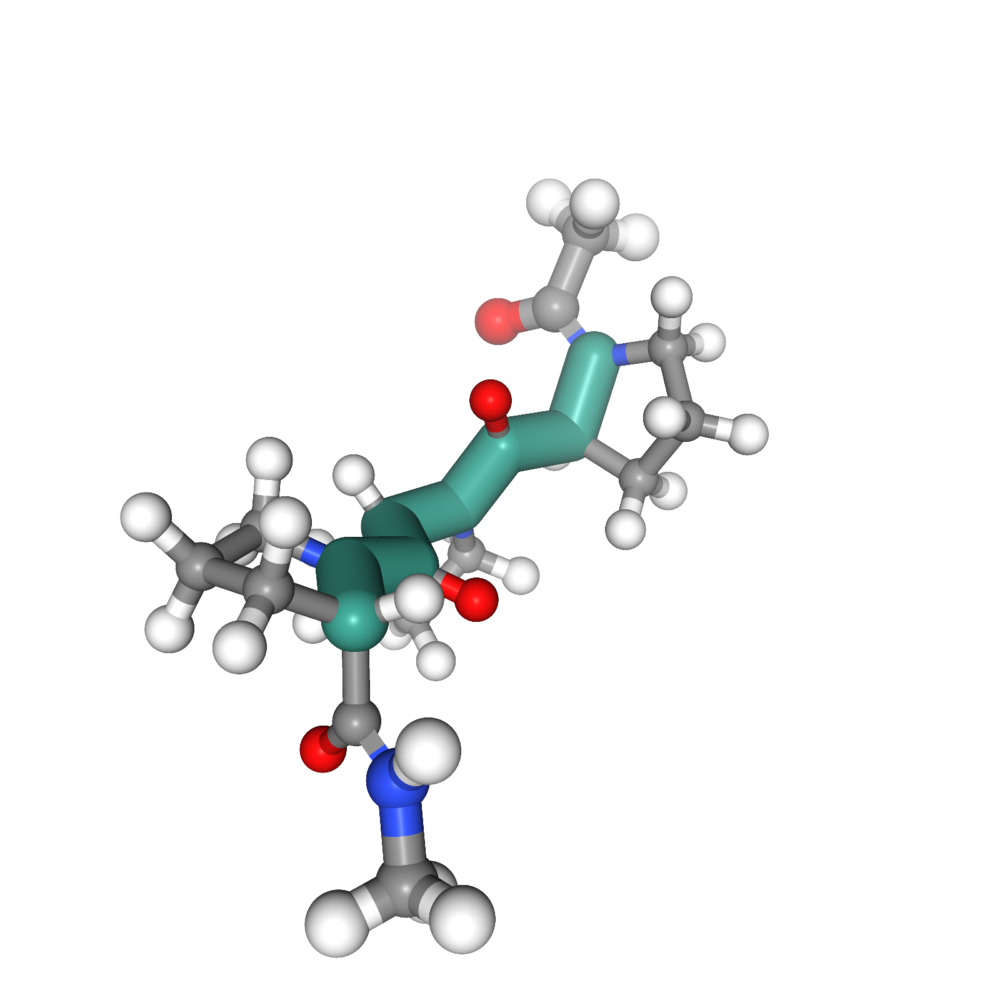
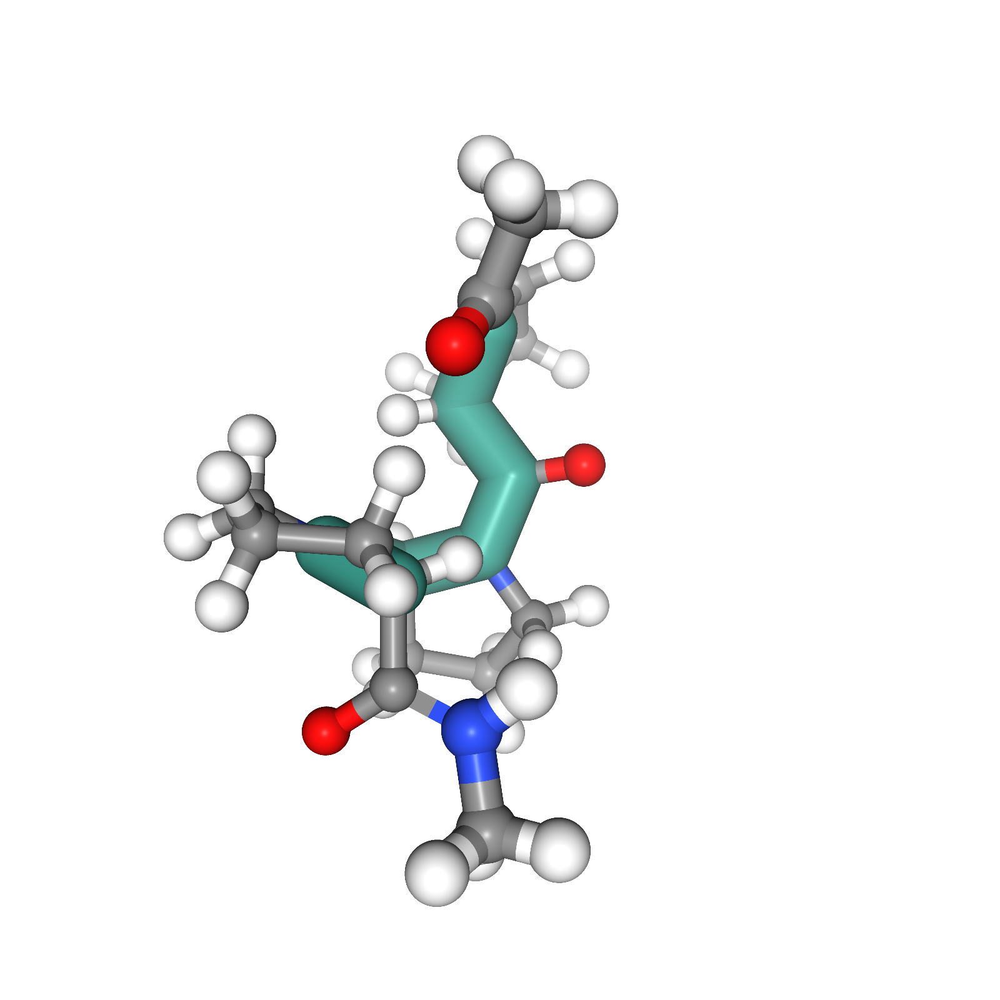

Left-handed (PP-II)

Isomerization

Right-handed (PP-I)
Understanding transition paths between meta-stable states in molecular systems is fundamental for material design and drug discovery. However, sampling these paths via unbiased molecular dynamics simulations is computationally prohibitive due to the high energy barriers between the meta-stable states. Recent machine learning approaches are often restricted to simple systems or rely on collective variables (CVs) extracted from expensive domain knowledge. In this work, we propose to leverage generative flow networks (GFlowNets) to sample transition paths without relying on CVs. We reformulate the problem as amortized energy-based sampling over transition paths and train a neural bias potential by minimizing the squared log-ratio between the target distribution and the generator, derived from the flow matching objective of GFlowNets. Our evaluation on three proteins (Alanine Dipeptide, Polyproline Helix, and Chignolin) demonstrates that our approach, called TPS-GFN, generates more realistic and diverse transition paths than the previous CV-free machine learning approach.
C5
Conformation Change
C7ax
Left-handed (PP-II)
Isomerization
Right-handed (PP-I)
Unfolded

Folding Process
Folded
Transition paths generated by TPS-GFN. (Top) A conformation change of Alanine Dipeptide. (Middle) An isomerization of Polyproline Helix from left-handed to right-handed helix. (Bottom) A Chignolin folding process.
64 sampled paths for each method on the Ramachandran plot of Alanine Dipeptide. White circles indicate meta-stable states, and stars indicate transition states. (a) The paths from unbiased MD simulations that fail to escape the initial meta-stable region. (b) The paths generated by PIPS pass through only one transition state. (c) The paths generated by TPS-GFN pass through both transition states. For clarity, 10 paths are highlighted.
An isomerization from the meta-stable region PP-II to PP-I of Polyproline generated by TPS-GFN. (Top) 3d views of three states: initial, transition, and final state. The backbone of the Polyproline Helix is highlighted in green. (Middle) The potential energy of states over time. (Bottom) The handedness of states over time. The red line at y=0 differentiates between PP-II and PP-I.
A folding process of Chignolin generated by TPS-GFN. (Top) 3d views of three states: initial, transition, and final state. (Middle) The potential energy over time. (Bottom) The donor-accepter distance of the two key hydrogen bonds, ASP3OD-THR6OG and ASP3N-THR8O over time. To form the hydrogen bonds, the donor-acceptor distance must be lower than the red line at y=3.5Å.